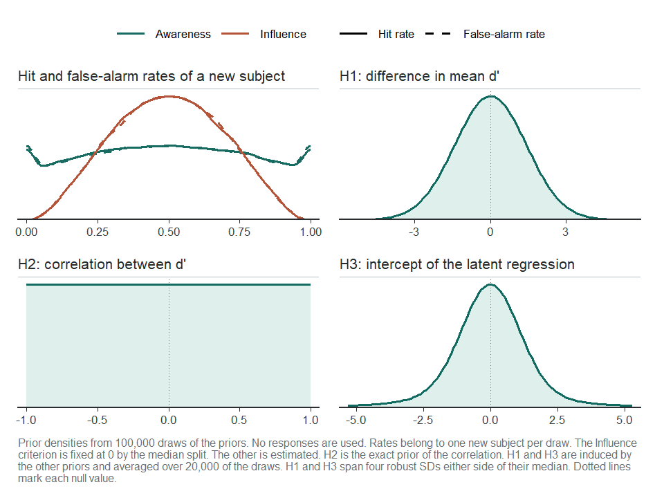
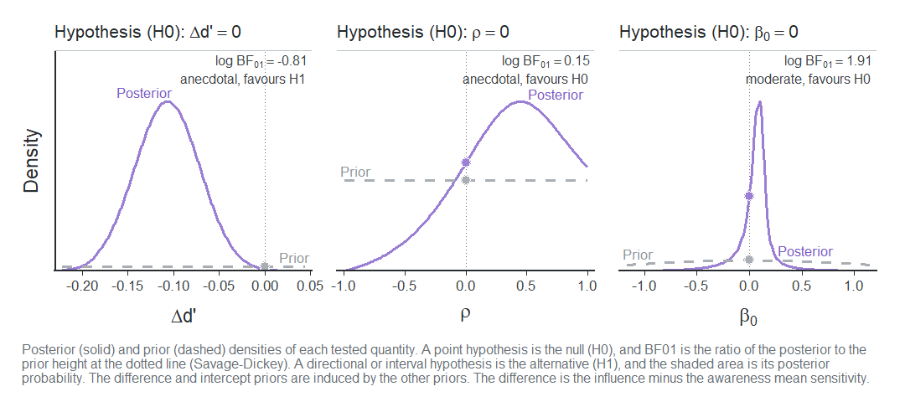
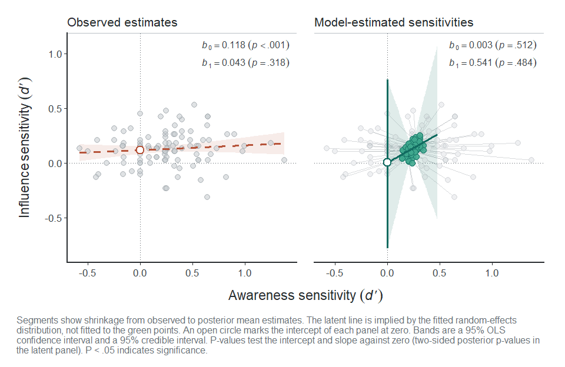
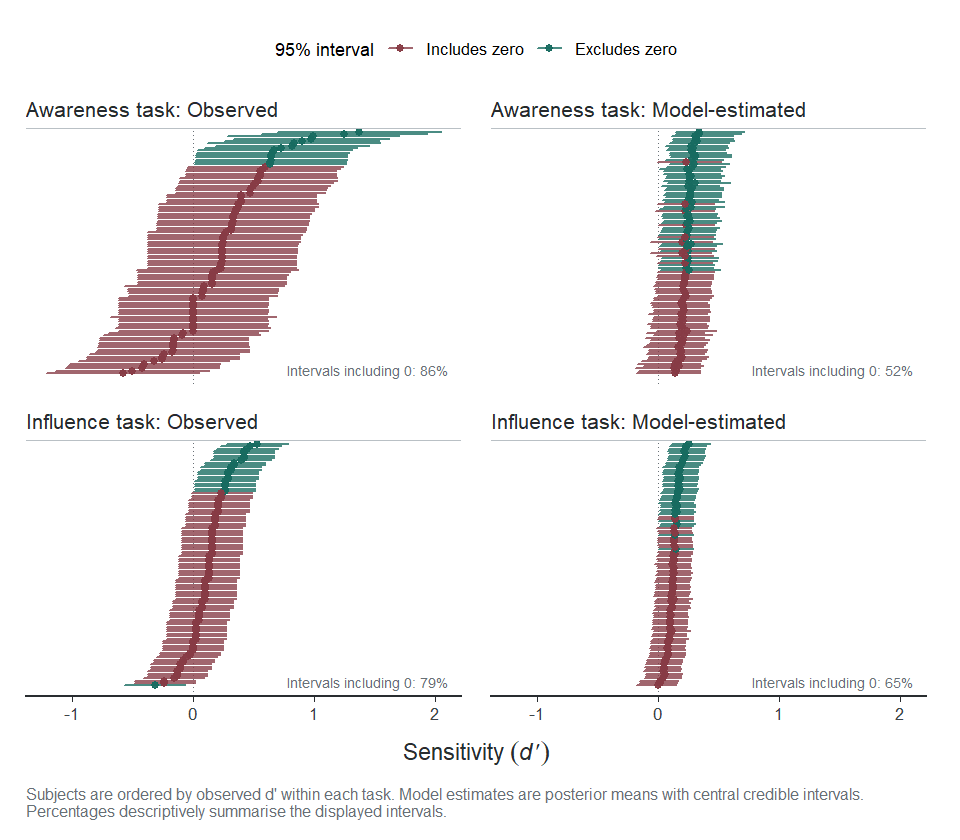
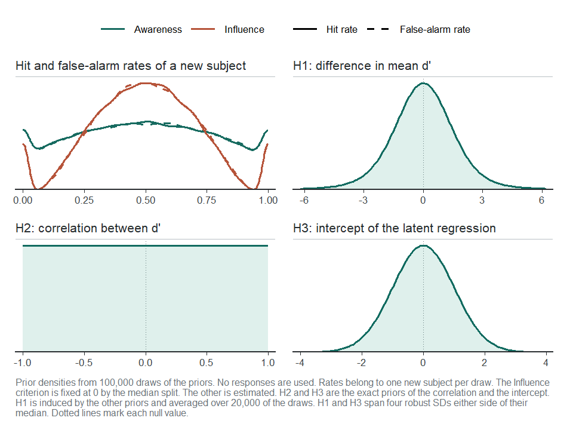

This article fits the tutorial’s model and data with brms and Stan, then summarises the posterior and computes Bayes factors.
Bayesian fitting needs a C++ toolchain and either rstan (with
BH and RcppEigen) or cmdstanr with CmdStan.
The brms.backend option selects the backend. The default is
rstan and this article uses cmdstanr. Compiled models are cached for
later sessions.
The data
We use the paired data exactly as the tutorial prepares them:
data_usdt <- usdt_data_tasks(
awareness = vadillo_awareness,
influence = vadillo_cuing,
subject_col = "subj",
condition_col = "condition",
condition_levels = c(signal = "old", noise = "new"),
response_col = list(awareness = "judged.old", influence = "rt"),
response_levels = list(awareness = c(signal = 1, noise = 0),
influence = c(signal = "faster", noise = "slower")),
dichotomize = list(awareness = FALSE, influence = TRUE)
)Choosing the priors
usdt_priors()
specifies the priors. Each prior is a string in Stan notation, and the
defaults are weakly informative on the probit scale:
priors <- usdt_priors()
priors── Priors ──────────────────────────────────────────────────────────────────────
Parameter Task Prior
mean d' awareness normal(0, 1)
mean d' influence normal(0, 1)
sd(d') awareness student_t(4, 0, 0.5)
sd(d') influence student_t(4, 0, 0.5)
cor(d') both lkj(1)
mean c awareness normal(0, 0.5)
mean c influence normal(0, 0.5)
sd(c) awareness student_t(4, 0, 0.5)
sd(c) influence student_t(4, 0, 0.5)
cor(c) both lkj(1)
sd(signal) awareness lognormal(0, 0.5)
sd(signal) influence lognormal(0, 0.5)
intercept both normal(0, 1)
Standard deviation priors are truncated at zero. cor(c) applies when
both criteria are estimated, and sd(signal) under unequal variances.
Under the latent regression, intercept replaces the influence mean d'.-
Means of d' and of the
criterion: normal priors centred at zero,
normal(0, 1)for d' andnormal(0, 0.5)for c. -
Between-subject standard deviations: Student-t priors truncated at zero,
student_t(4, 0, 0.5). -
Correlations:
lkj(1), a uniform prior on (-1, 1). Larger values of its argument concentrate the correlation around zero. - Intercept: used only by the latent regression parameterization, at the end of this article, in place of the prior of the influence mean.
Supported families are listed in usdt_priors().
Means need full real-line support. SDs need positive support or
truncation at zero.
The model only uses the priors of the parameters it estimates. Here the median split fixes the influence criterion at zero and both tasks have equal variances, so the influence criterion, the criterion correlation and the signal standard deviations play no role.
Checking what the priors imply
Before fitting anything, plot() simulates the priors to
show what they say about the data and the hypotheses:
plot(priors, data = data_usdt)
plot of chunk prior-check
- Hit and false-alarm rates (top left): the rates of a new subject spread over the whole (0, 1) range without piling up at either end. The influence rates are more concentrated because the median split fixes their criterion.
- H1 and H2 (top right, bottom left): the priors of \Delta d', a normal centred at zero, and of \rho, uniform.
- H3 (bottom right): the intercept of the latent regression has no prior of its own. Its prior follows from those of the means, standard deviations and correlation, and is symmetric around zero with heavy tails.
To change a prior, pass its new value to usdt_priors(),
either for both tasks or per task, and the result to
hsdt():
priors_custom <- usdt_priors(
dprime = list(awareness = "normal(0, 1)", influence = "normal(0, 0.5)"),
sd_dprime = "gamma(2, 4)"
)
hsdt(data_usdt, estimation = "bayesian", priors = priors_custom)Fitting the model
Setting estimation = "bayesian" in hsdt() fits the model
with brms:
fit_bayes <- hsdt(data_usdt, estimation = "bayesian", seed = 2026)Defaults are four chains, each with 1,000 warmup iterations and 5,000
kept draws. Inspect divergences, tree-depth warnings, R-hat and
effective sample size before interpreting the fit. Sampling options
include chains, iter (including warmup),
warmup, cores, seed and
control. backend selects the Stan
interface.
The summary has the same structure as the frequentist one:
summary(fit_bayes)── Model summary ───────────────────────────────────────────────────────────────
Subjects: 104
Observations: 416 aggregated rows (46,592 trials)
Family: binomial (probit), equal variances
Criteria: Awareness estimated, Influence fixed to 0 (Meyen split, mean |c| = 0.0000)
Estimation: brms via cmdstanr, 4 chains x 5,000 draws (warmup 1,000)
Diagnostics: max R-hat 1.002, min ESS 1,880, 0 divergentLoading required namespace: rstan
── Fixed effects ───────────────────────────────────────────────────────────────
Parameter Task Mean SD 95% CrI R-hat ESS
criterion Awareness -0.0356 0.0289 [ -0.092, 0.021] 1.000 9,191
d' Awareness 0.2350 0.0330 [ 0.170, 0.300] 1.000 32,301
d' Influence 0.1283 0.0153 [ 0.098, 0.158] 1.000 26,275
── Random effects ──────────────────────────────────────────────────────────────
Parameter Task Mean SD 95% CrI R-hat ESS
sd(criterion) Awareness 0.2513 0.0249 [ 0.205, 0.303] 1.000 9,337
sd(d') Awareness 0.1073 0.0597 [ 0.006, 0.224] 1.000 4,354
sd(d') Influence 0.0864 0.0219 [ 0.039, 0.127] 1.000 5,186
cor(d') both 0.2902 0.4448 [ -0.740, 0.954] 1.002 1,880
── Hypotheses ──────────────────────────────────────────────────────────────────
H1: Group-level sensitivity difference (Δd' = Influence d' - Awareness d')
Parameter Mean SD 95% CrI p-value
Δd' (I - A) -0.1067 0.0358 [ -0.177, -0.036] .002
H2: Correlation between sensitivities across tasks
Parameter Mean SD 95% CrI p-value
rho 0.2902 0.4448 [ -0.740, 0.954] .484
H3: Latent regression of Influence d' on Awareness d'
Parameter Mean SD 95% CrI p-value
Intercept 0.0026 7.9765 [ -0.780, 0.761] .512
Slope 0.5406 34.1561 [ -2.712, 3.862] .484
── Priors ──────────────────────────────────────────────────────────────────────
Parameter Task Prior
mean d' Awareness normal(0, 1)
mean d' Influence normal(0, 1)
sd(d') Awareness student_t(4, 0, 0.5)
sd(d') Influence student_t(4, 0, 0.5)
cor(d') both lkj(1)
mean c Awareness normal(0, 0.5)
sd(c) Awareness student_t(4, 0, 0.5)
── Notes ───────────────────────────────────────────────────────────────────────
Mean, SD and CrI are the posterior mean, posterior SD and central
credible interval. The p-value is the two-sided posterior p-value.Estimates are posterior means, with posterior SDs and central 95% credible intervals (CrIs). Mean sensitivities are d' = 0.24 in the awareness task and d' = 0.13 in the influence task.
The brms fit
fit_bayes$fit is a brmsfit. Its non-linear
parameters include dA and dI (sensitivities)
and cA (the classical awareness criterion). Inspect their
priors with:
prior_table <- brms::prior_summary(fit_bayes$fit)
prior_table[prior_table$source == "user", ] prior class coef group resp dpar nlpar lb ub tag source
lkj_corr_cholesky(1) L subj user
normal(0, 0.5) b cA user
normal(0, 1) b dA user
normal(0, 1) b dI user
student_t(4, 0, 0.5) sd subj dA user
student_t(4, 0, 0.5) sd subj dI user
student_t(4, 0, 0.5) sd subj_c cA userCriteria use a separate subject block, subj_c. Check
model adequacy with posterior predictive comparisons as well as sampler
diagnostics:
brms::pp_check(fit_bayes$fit)The three hypotheses
The p-value of each hypothesis is now the two-sided posterior p-value, 2 \min\{P(\theta > 0 \mid y), P(\theta < 0 \mid y)\}. It falls below .05 when the central 95% credible interval excludes zero (up to finite-draw rounding). This is posterior sign uncertainty, not a frequentist p-value or a Bayes factor.
- H1 (\Delta d'): awareness of the repeated patterns is again stronger than their influence on search (\Delta d' = -0.11, 95% CrI [-0.18, -0.04], p = .002), the same conclusion as in the tutorial.
- H2 (\rho): the posterior of the latent correlation spans almost the whole range (95% CrI [-0.74, 0.95]). The data say little about it.
- H3 (latent regression): the 95% credible interval of the intercept covers zero ([-0.78, 0.76]). Its posterior mean (0.00) and standard deviation (7.98) are dominated by heavy tails: the awareness sensitivity barely varies across subjects (\text{sd}(d') = 0.11), so the slope \rho \, \sigma_I / \sigma_A can take very large values. With posteriors like this one, emphasise the credible interval.
Bayes factors
A credible interval that covers zero does not show that an effect is
absent. usdt_bf()
weighs the evidence for and against each hypothesis. By default, it
tests the three point nulls with the Savage-Dickey density ratio and
draws the prior and posterior of each tested quantity:

plot of chunk bf
bf uSDT hypothesis ─ Savage-Dickey density ratio test
════════════════════════════════════════════════════════════════════════════════
Hypothesis (H1) : Δd' != 0
Hypothesis (H0) : Δd' = 0
Posterior mean : -0.107
Posterior SD : 0.036
95% CrI : [-0.177, -0.036]
log BF10 : 0.809
log BF01 : -0.809
Evidence : anecdotal for H1
────────────────────────────────────────────────────────────────────────────────
uSDT hypothesis ─ Savage-Dickey density ratio test
════════════════════════════════════════════════════════════════════════════════
Hypothesis (H1) : rho != 0
Hypothesis (H0) : rho = 0
Posterior mean : 0.290
Posterior SD : 0.445
95% CrI : [-0.740, 0.954]
log BF10 : -0.151
log BF01 : 0.151
Evidence : anecdotal for H0
────────────────────────────────────────────────────────────────────────────────
uSDT hypothesis ─ Savage-Dickey density ratio test
════════════════════════════════════════════════════════════════════════════════
Hypothesis (H1) : intercept != 0
Hypothesis (H0) : intercept = 0
Posterior mean : 0.003
Posterior SD : 7.976
95% CrI : [-0.780, 0.761]
log BF10 : -1.909
log BF01 : 1.909
Evidence : moderate for H0
────────────────────────────────────────────────────────────────────────────────A point statement names H0. An inequality or region names H1. Reports give both log Bayes factors. Each plot panel reports evidence for the hypothesis in its title: BF01 for a point null, BF10 for a direction or region.
- \Delta d' = 0: the evidence for a difference is anecdotal (\log \text{BF}_{01} = -0.81, \text{BF}_{10} = 2.2), even though the credible interval excludes zero. The Bayes factor compares the posterior with the whole prior, and a \text{normal}(0, 1) prior on each mean expects much larger differences than -0.11.
- \rho = 0: the evidence is anecdotal (\log \text{BF}_{01} = 0.15).
- Intercept \beta_0 = 0: there is moderate evidence for the null (\log \text{BF}_{01} = 1.91, \text{BF}_{01} = 6.7) under these priors. This compares the zero latent intercept with its specified alternative. It does not identify individual participants without awareness.
Solid curves show posteriors and dashed curves priors. For a point
null, BF01 is posterior density divided by prior density at the dotted
line. Use usdt_bf(..., plot = FALSE) to compute without
drawing, then plot(bf) to draw later.
caption = FALSE hides the caption.
You can also test directional hypotheses and regions, such as a region of practical equivalence around zero:
set.seed(2026)
bf_other <- usdt_bf(fit_bayes, c("intercept > 0", "diff in [-0.1, 0.1]"),
plot = FALSE)
bf_other uSDT hypothesis ─ Directional test
════════════════════════════════════════════════════════════════════════════════
Hypothesis (H1) : intercept > 0
Hypothesis (H0) : intercept <= 0
Posterior mean : 0.003
Posterior SD : 7.976
95% CrI : [-0.780, 0.761]
Posterior probability (H1) : 0.744
log BF10 : 1.067
log BF01 : -1.067
Evidence : anecdotal for H1
────────────────────────────────────────────────────────────────────────────────
uSDT hypothesis ─ Interval test
════════════════════════════════════════════════════════════════════════════════
Hypothesis (H1) : Δd' in [-0.1, 0.1]
Hypothesis (H0) : Δd' out [-0.1, 0.1]
Posterior mean : -0.107
Posterior SD : 0.036
95% CrI : [-0.177, -0.036]
Posterior probability (H1) : 0.421
log BF10 : 2.503
log BF01 : -2.503
Evidence : strong for H1
────────────────────────────────────────────────────────────────────────────────These Bayes factors compare the posterior odds of H1, the share of posterior draws inside it, with its prior odds. A positive intercept has a posterior probability of .744 against .500 a priori, which is anecdotal evidence. The region [-0.1, 0.1] holds 42% of the posterior but only about 6% of the prior, so the Bayes factor is strong (\log \text{BF}_{10} = 2.50) even though the posterior mean lies just outside it. Read interval Bayes factors together with the posterior probability.
Bayes factors depend on the priors. Report the priors and check sensitivity to other defensible choices by refitting. Changing prior width need not have the same effect for every hypothesis.
Visualizing the posterior
All the plots of the tutorial work with a Bayesian fit, and show posterior means with credible intervals.
The latent regression
plot(fit_bayes)
plot of chunk plot-regression
The left panel is unchanged. In the right panel, the latent line uses the posterior means, and its 95% credible band fans out away from the group means because the slope is so uncertain. The vertical segment at d'_{\text{Awareness}} = 0 is the credible interval of the intercept.
Subject intervals
plot(fit_bayes, type = "caterpillar")
plot of chunk plot-caterpillar
The right panels show each participant’s posterior mean d' with its 95% credible interval.
Partial pooling pulls the estimates towards the group mean and narrows
their intervals. type = "shrinkage" and
type = "roc" work as in the tutorial.
The latent regression parameterization
The intercept of H3 has no prior of its own above: the model places
its priors on the means, standard deviations and correlation of the two
sensitivities, and the intercept prior they induce has very heavy tails.
Its Bayes factor depends on all of them. With
latent = "regression", the prior of the influence mean
moves to the intercept \beta_0 of the
latent regression, the last row of usdt_priors(). The
influence mean follows from it as \mu_I =
\beta_0 + \rho \, (\sigma_I / \sigma_A) \, \mu_A, and the priors
of the awareness mean, the standard deviations and the correlation do
not change.
When \sigma_A approaches zero, the
ratio \sigma_I/\sigma_A can produce
difficult posterior geometry. A prior that gives less weight near zero
can help, if substantively justified. Here we use
gamma(2, 4) for \sigma_A
and retain the default for \sigma_I:
priors_reg <- usdt_priors(sd_dprime = list(awareness = "gamma(2, 4)",
influence = "student_t(4, 0, 0.5)"))
plot(priors_reg, data = data_usdt, latent = "regression")
plot of chunk prior-check-regression
H3 now has the specified intercept prior (default
normal(0, 1)), while H1 has the induced prior \Delta d' = \beta_0 +
(\rho\,\sigma_I/\sigma_A-1)\mu_A. Inspect both the hypothesis and
predictive implications: this choice changes the prior model, even
though it reports the same quantities.
fit_reg <- hsdt(data_usdt, estimation = "bayesian", priors = priors_reg,
latent = "regression", seed = 2026)The model samples the same parameters as before, so the fit reports the same tables and hypotheses, and its header names the parameterization:
summary(fit_reg)── Model summary ───────────────────────────────────────────────────────────────
Subjects: 104
Observations: 416 aggregated rows (46,592 trials)
Family: binomial (probit), equal variances
Model: latent regression of Influence d' on Awareness d'
Criteria: Awareness estimated, Influence fixed to 0 (Meyen split, mean |c| = 0.0000)
Estimation: brms via cmdstanr, 4 chains x 5,000 draws (warmup 1,000)
Diagnostics: max R-hat 1.002, min ESS 2,578, 0 divergent
── Fixed effects ───────────────────────────────────────────────────────────────
Parameter Task Mean SD 95% CrI R-hat ESS
criterion Awareness -0.0357 0.0294 [ -0.094, 0.021] 1.001 9,838
d' Awareness 0.2345 0.0343 [ 0.167, 0.301] 1.000 34,365
d' Influence 0.1282 0.0154 [ 0.098, 0.158] 1.001 25,396
── Random effects ──────────────────────────────────────────────────────────────
Parameter Task Mean SD 95% CrI R-hat ESS
sd(criterion) Awareness 0.2515 0.0254 [ 0.205, 0.305] 1.000 8,970
sd(d') Awareness 0.1330 0.0529 [ 0.034, 0.238] 1.001 6,784
sd(d') Influence 0.0866 0.0213 [ 0.041, 0.126] 1.000 6,732
cor(d') both 0.3342 0.4010 [ -0.560, 0.954] 1.002 2,578
── Hypotheses ──────────────────────────────────────────────────────────────────
H1: Group-level sensitivity difference (Δd' = Influence d' - Awareness d')
Parameter Mean SD 95% CrI p-value
Δd' (I - A) -0.1062 0.0368 [ -0.178, -0.034] .004
H2: Correlation between sensitivities across tasks
Parameter Mean SD 95% CrI p-value
rho 0.3342 0.4010 [ -0.560, 0.954] .402
H3: Latent regression of Influence d' on Awareness d'
Parameter Mean SD 95% CrI p-value
Intercept 0.0653 0.1236 [ -0.204, 0.266] .365
Slope 0.2695 0.5224 [ -0.568, 1.421] .402
── Priors ──────────────────────────────────────────────────────────────────────
Parameter Task Prior
mean d' Awareness normal(0, 1)
sd(d') Awareness gamma(2, 4)
sd(d') Influence student_t(4, 0, 0.5)
cor(d') both lkj(1)
mean c Awareness normal(0, 0.5)
sd(c) Awareness student_t(4, 0, 0.5)
intercept both normal(0, 1)
── Notes ───────────────────────────────────────────────────────────────────────
Mean, SD and CrI are the posterior mean, posterior SD and central
credible interval. The p-value is the two-sided posterior p-value.\Delta d' = -0.11 (95% CrI [-0.18, -0.03]) as before. The intercept, with a prior of its own and \sigma_A kept away from zero, has the 95% credible interval [-0.20, 0.27], against [-0.78, 0.76] when its prior was induced by the others.
The interval of \rho is now [-0.56, 0.95], against [-0.74, 0.95] before. Both the intercept prior and the SD prior changed. This comparison does not isolate either one’s effect. The intercept prior also affects the correlation posterior and Bayes factor:
uSDT hypothesis ─ Savage-Dickey density ratio test
════════════════════════════════════════════════════════════════════════════════
Hypothesis (H1) : intercept != 0
Hypothesis (H0) : intercept = 0
Posterior mean : 0.065
Posterior SD : 0.124
95% CrI : [-0.204, 0.266]
log BF10 : -1.752
log BF01 : 1.752
Evidence : moderate for H0
────────────────────────────────────────────────────────────────────────────────
uSDT hypothesis ─ Savage-Dickey density ratio test
════════════════════════════════════════════════════════════════════════════════
Hypothesis (H1) : rho != 0
Hypothesis (H0) : rho = 0
Posterior mean : 0.334
Posterior SD : 0.401
95% CrI : [-0.560, 0.954]
log BF10 : -0.185
log BF01 : 0.185
Evidence : anecdotal for H0
────────────────────────────────────────────────────────────────────────────────Where to go from here
Reliability
usdt_reliability()
returns the posterior of each task’s reliability:
reliability <- usdt_reliability(fit_bayes)
reliability── Reliability summary ─────────────────────────────────────────────────────────
Task Subjects Group mean SD 95% CrI By-subject mean median [min, max]
Awareness 104 .118 .096 [ 0.000, 0.331] .119 [.110, .120]
Influence 104 .311 .102 [ 0.086, 0.495] .311 [.310, .312]
Means, SDs and credible intervals summarise the posterior draws.The posterior means (.118 and .311) are close to the frequentist estimates, and the credible intervals show how uncertain they are: the reliability of the awareness task could be anywhere between 0.00 and .331.
Unequal signal and noise variances
unequal_variances = TRUE is available for Bayesian
fits:
fit_uv <- hsdt(data_usdt, estimation = "bayesian",
unequal_variances = TRUE, seed = 2026)With one binary operating point per task, signal SDs are weakly
identified, so check prior sensitivity. H1–H3 then use the separation
d in noise-SD units. To compare
discriminability across different signal SDs, transform each draw to
d_a=d\sqrt{2/(1+\sigma_s^2)}. See hsdt(). The
equal-variance tutorial does not fit this extension.
Custom models fitted with brms
When you need covariates, you can fit your own model with
brms and test it with the same functions. usdt_aggregate()
counts the trials first, which makes the fit much faster.
usdt_bf() reads the priors from the model, so the two
sensitivities need proper priors from the families of
usdt_priors():
trials <- rbind(
data.frame(vadillo_awareness[c("subj", "condition", "set.size")],
task = "A", resp = vadillo_awareness$judged.old),
data.frame(vadillo_cuing[c("subj", "condition", "set.size")],
task = "I", resp = meyen_split(vadillo_cuing$rt,
by = vadillo_cuing$subj))
)
trials <- within(trials, {
cond <- ifelse(condition == "old", 0.5, -0.5)
size <- ifelse(set.size == "set size 16", 0.5, -0.5)
awareness <- as.integer(task == "A")
})
counts <- usdt_aggregate(trials, response = "resp",
by = c("subj", "task", "cond", "size", "awareness"))
fit_brms <- brms::brm(
y | trials(n) ~ 0 + awareness + task:size + task:cond +
(0 + awareness | subj) + (0 + task:cond | subj),
data = counts, family = binomial("probit"),
prior = brms::prior(normal(0, 1), class = b)
)
usdt_tests(fit_brms, awareness = "taskA:cond", influence = "taskI:cond")
usdt_bf(fit_brms, awareness = "taskA:cond", influence = "taskI:cond")The examples of usdt_tests()
build counts from the Vadillo data with set size as a
covariate.
References
Vadillo, M. A., Malejka, S., & Shanks, D. R. (2025). Mapping the reliability multiverse of contextual cuing. Journal of Experimental Psychology: Learning, Memory, and Cognition, 51(6), 910-927. https://doi.org/10.1037/xlm0001410
Wagenmakers, E.-J., Lodewyckx, T., Kuriyal, H., & Grasman, R. (2010). Bayesian hypothesis testing for psychologists: A tutorial on the Savage-Dickey method. Cognitive Psychology, 60(3), 158-189. https://doi.org/10.1016/j.cogpsych.2009.12.001